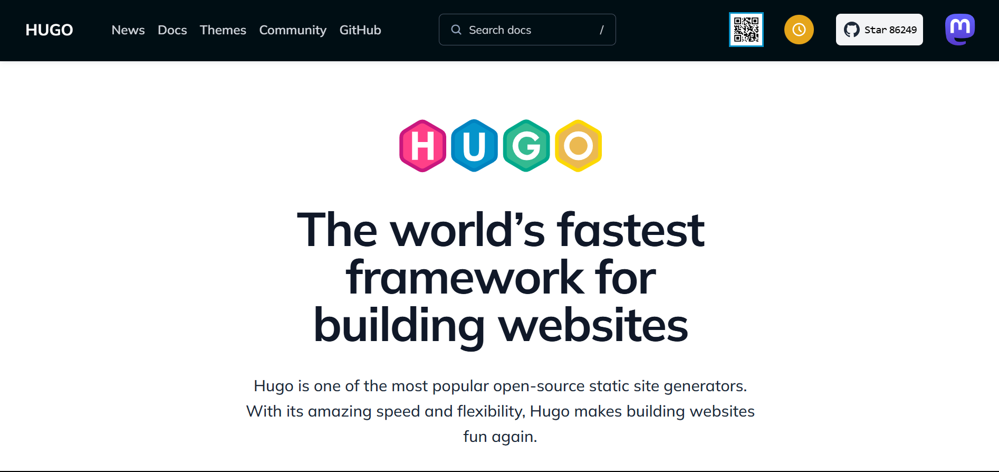
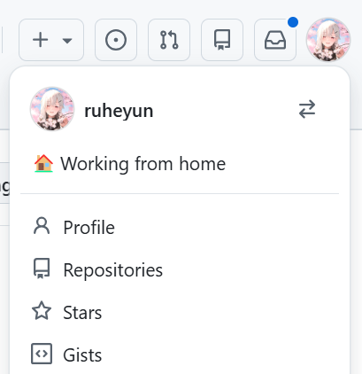
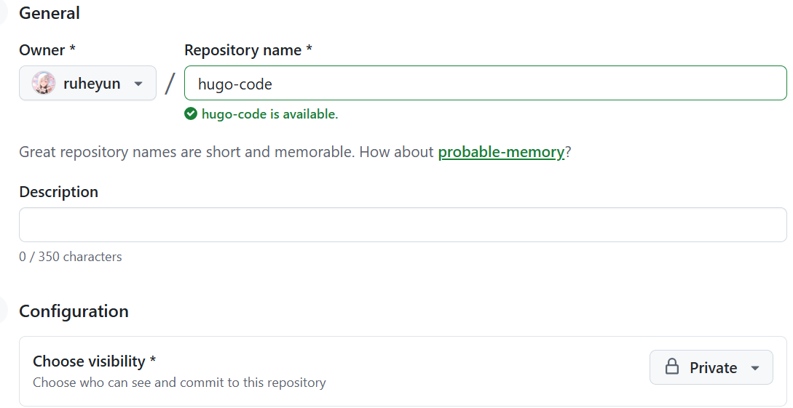
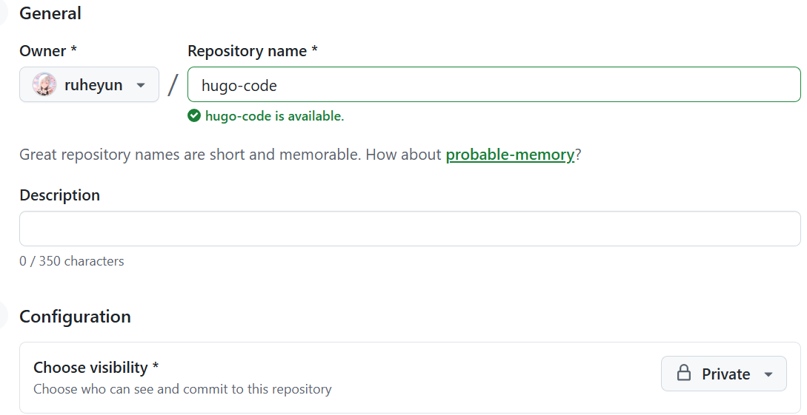
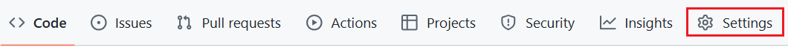

这篇文章主要是记录了使用Hugo和Stack搭建整个网站的过程，以及部署到Github上，并编写了几个方便使用的Bat脚本。
Hugo网站搭建过程
下载Hugo
进入Hugo官网
点击上图Github
右侧界面找到Releases，点击进入
在Assets中找到适合自己电脑的版本

以Windows为例，下载hugo_extended_0.154.5_windows-amd64.zip 。
解压出来放到自定义文件夹内

一共三个文件，只有hugo.exe有用
|
|
在该文件夹的地址栏敲打cmd，使用以下命令
|
|
进入由Hugo生成的blog文件夹。
下载Stack主题
Hugo官网点击Themes

选择自己喜欢的主题，这里以Stack为例，点击Stack，然后点击Download会跳转到该主题的Github页面，按照上面下载Hugo的方式下载最新版主题源码。

将下载后的主题压缩包解压，文件夹名字去掉版本号，如下图形式，复制到blog文件夹内的themes里
启动Hugo网站
先将D:\Dev\MyBlog文件夹下的hugo.exe，复制到D:\Dev\MyBlog\blog下，然后在该文件夹的地址栏敲打cmd，进入命令行窗口，输入下面命令
|
|
复制图片倒数第二行地址 http://localhost:1313/，去浏览器打开，最基础的网站就搭建好了。
配置Stack主题
主题文件夹路径为D:\Dev\MyBlog\blog\themes\hugo-theme-stack，但是不建议直接改themes内的文件，所以把下图两个重要的文件和文件夹复制到D:\Dev\MyBlog\blog文件夹下
后续如果有要修改
hugo-theme-stack内的文件或文件夹，就在blog文件夹下创建相同路径或文件进行修改，blog文件夹优先级高于hugo-theme-stack文件夹。
删除blog文件夹下的hugo.toml文件，使用上面复制的hugo.yaml配置文件。
更改网站名字
|
|
网站默认为简体中文
|
|
标题和子标题
|
|
weight是指在下拉菜单中的位置权重，越靠近0的在上方。
设置每页显示文章个数
|
|
网站的图标
|
|
在D:\Dev\MyBlog\blog\static目录下放图标。
页脚日期以及文章日期格式
|
|
头像设置
|
|
目录为D:\Dev\MyBlog\blog\assets\img，所有操作都是在blog内操作，不改themes文件夹内的内容。
配置评论区
本网站使用giscus评论软件 ，这个功能是基于Github的，因此此部分放到部署到Github后。
部署到Github
首先要有Github账号，本地电脑安装了Git，后续需要用 git 将代码上传到 github，这部分需要在本地 git 配置密钥与 github 连接，自行学习关于 git 部分内容。
先创建Github仓库
点击Github头像，点击Repositories，然后点击New创建仓库
两个仓库要求如下：
 

第一个仓库公开，名字必须是你的github名字.github.io。
第二个仓库隐私，名字随意，比如hugo-code。
手动部署
先改动hugo.yaml配置文件第一行，将网站网址填进去
|
|
public文件夹是整个网站文件夹经过go语言编译好的包含html文件的文件夹，不包含原始代码。由命令hugo server -D产生的（前面使用过，如果更改了内容就需要重新运行这个命令，更新public文件夹）。
进入public文件夹，地址为D:\Dev\MyBlog\blog\public，在地址栏敲cmd，进入命令行窗口，依次输入下面命令
|
|
打开github，到ruheyun.github.io仓库界面

依次点击Settings->Pages->Visit site
或者直接浏览器输入https://ruheyun.github.io/，成功进入网站。
自动部署
按照上面手动部署过程，每次改完内容，都需要运行hugo server -D更新public文件夹，然后将public文件夹推送到远程仓库。这里提供自动部署方案。
生成token
依次点击github头像->Settings->Developer settings->Personal access tokens->Tokens(classic)->Generate new token(classic)

按照图示Note随便写
Expiration建议按照图示选择，表示token永远有效
Select scopes建议按照图示选择
最后生成的token，要自己建个txt文件保留好，只会在生成的这个时候显示，以后不会再显示具体token值了
配置token
下一步，将token值配置到上面创建的第二个隐私仓库里。
首先进入仓库hugo-code页面，依次点击Settings->Secrets and variables->Actions->Repository secrets->New repository secret
然后将token值填进去保存为TOKEN，这个名字可自定义。
配置本地文件
在hugo主文件夹，比如D:\Dev\MyBlog\blog，创建一个.github/workflows/hugo-deploy.yaml文件，将以下内容复制进去，想具体了解更多，可查看Github Action文档
|
|
只需要改动两个地方
|
|
设置.gitignore文件
|
|
这个文件放到主文件夹下，在git推送代码时，会忽略上述文件夹和文件。
推送代码
将所有网站代码推送到hugo-code仓库
在主文件夹D:\Dev\MyBlog\blog的地址栏输入cmd进入命令行，依次执行下面命令
|
|
上传之后会自动部署静态仓库ruheyun.github.io，稍等一会儿刷新网站就可以看到已更新。
下次更新操作
|
|
通过上面两种方式更改代码，只需要依次执行上面代码，将主文件夹内的文件上传到隐私仓库即可，静态仓库会自动部署，不用管。
一键式脚本
经过上面的自动部署，但仍需敲一些代码，现将这些代码作成bat脚本，不用再输入代码。
newpost.bat：新建文章页，需要手动输入文章标题，不要含空格。
|
|
localRun.bat：本地运行代码查看，可不运行。
|
|
update.bat：将本地代码推送到远程仓库，仓库名自定义。
|
|
将上面三个bat文件放到hugo主文件夹下D:\Dev\MyBlog\blog，根据想要的功能，双击对应的bat文件即可。